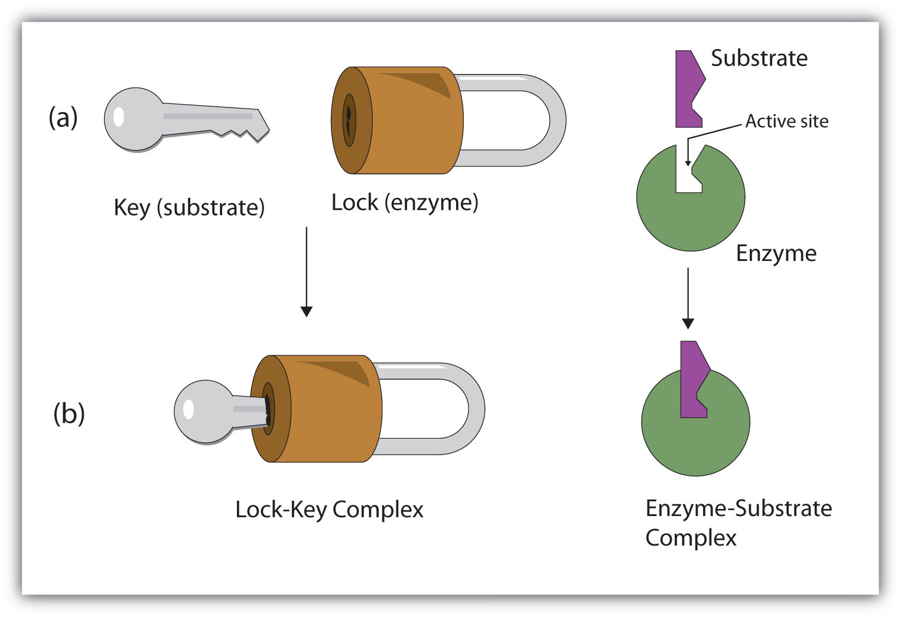

Automatic Schematization of Biological Mechanisms Via Alignment and Abstraction of Causal Relations Among Domain Specific Causal Pathways
University of Colorado Anschutz Medical Campus
11/14/2020
Inventing mechanism schema by refactoring biological pathways
Harrison Pielke-Lombardo
University of Colorado Anschutz Medical Campus
11/14/2020
Biological analogies
- DNA replication → zipper
- Enzyme activity → lock-and-key
- Inhibition of tumor growth → hormone driven cancer (breast vs prostate cancer)


Biological Mechanisms

Mechanisms are entities and activities organized such that they are productive of regular changes from start or set-up conditions to finish or termination conditions.
What is a mechanism schema?
A mechanism schema is a truncated abstract description of a mechanism that can be filled with more specific descriptions of component entities and activities.
[dardenStrategiesDiscoveringMechanisms2002]

How does biological mechanism schematization relate to computational analogy?
- Tasks
- Retrieval
- Mapping
- Abstraction/generalization
Rerepresentation
Mechanism Schematization: Breast Cancer vs Prostate Cancer

Prostate Cancer

Breast Cancer

Hormone-driven Cancer Schema
Goal
Develop and evaluate an automatic mechanism schematization method using existing biomedical ontologies, databases, and knowledge-bases and use the schema to hypothesize new relationships and disease mechanisms.
Hypothesis: Analogical alignment of concrete mechanisms will produce predictive and externally coherent mechanism schema.
Starting materials
- Input
- Causal knowledge → concrete mechanism graphs (REACTOME/GO-CAMs/MecCog) [fabregatReactomePathwayKnowledgebase2018],[thomasGeneOntologyCausal2019],[dardenHarnessingFormalConcepts2018]
- Other knowledge → knowledge graph (KaBOB) [livingstonKaBOBOntologybasedSemantic2015]
- Output
- Mechanism schema
- Optimization
- Maximize coverage of concrete mechanisms while minimizing information loss
- Minimum common subgraph
Algorithm overview
Given a set of concrete mechanisms and a knowledge graph, find a mechanism schema.
Step = causal relationship between two entities.
- Consider every possible step between two entities in the set of concrete mechanisms.
- Score each possible step.
- Assemble high scoring steps into the mechanism schema.
Final step score equation
\[ C(a, b, m) = len(shortestpath(a, b, m)) \]
\[ P(a, b, M) = \frac{1}{|M|} \sum_{m \in M} S_{GO}(a, a_m) S_{GO}(b, b_m) k^{-C(a_m, b_m, m)} \]
Future directions
- Case study: oncogenesis via developmental pathways
- Explore hyper-parameters:
- score threshold
- proxy-entity inclusion threshold
- causal path distance weight
- semantic similarity weights
Acknowledgments
- Advisor: Larry Hunter
- Colorado Biomedical Informatics Training Program grant T15 LM009451
- [craverSearchMechanismsDiscoveries2014] Craver & Darden, In Search of Mechanisms: Discoveries across the Life Sciences, University of Chicago Press (2014).
- [dardenHarnessingFormalConcepts2018] Darden, Kundu, Pal & Moult, Harnessing Formal Concepts of Biological Mechanism to Analyze Human Disease, PLoS Computational Biology, 14(12), 1-10 (2018). doi.
- [dardenStrategiesDiscoveringMechanisms2002] Darden, Strategies for Discovering Mechanisms: Schema Instantiation, Modular Subassembly, Forward/Backward Chaining, Philosophy of Science, 69(S3), S354-S365 (2002). doi.
- [fabregatReactomePathwayKnowledgebase2018] Fabregat, Jupe, Matthews, Sidiropoulos, Gillespie, Garapati, Haw, Jassal, Korninger, May, Milacic, Roca, Rothfels, Sevilla, Shamovsky, Shorser, Varusai, Viteri, Weiser, Wu, Stein, Hermjakob & D'Eustachio, The Reactome Pathway Knowledgebase, Nucleic Acids Research, 46(D1), D649-D655 (2018). doi.
- [livingstonKaBOBOntologybasedSemantic2015] Livingston, Bada, Baumgartner & Hunter, KaBOB: Ontology-Based Semantic Integration of Biomedical Databases, BMC Bioinformatics, 16(1), 126 (2015). doi.
- [machamerThinkingMechanisms2000] Machamer, Darden & Craver, Thinking about Mechanisms, Philosophy of Science, 67(1), 1-25 (2000). doi.
- [mitchellCanGPT3Make2020] @miscmitchellCanGPT3Make2020, title = Can GPT-3 Make Analogies?, author = Mitchell, Melanie, year = 2020, month = aug, abstract = By Melanie Mitchell, file = /home/harrisonpl/Zotero/storage/VY27Q755/can-gpt-3-make-analogies-16436605c446.html, howpublished = https://medium.com/@melaniemitchell.me/can-gpt-3-make-analogies-16436605c446, journal = Medium, language = en
- [pawlikRTEDRobustAlgorithm2011] Pawlik & Augsten, RTED: A Robust Algorithm for the Tree Edit Distance, arXiv:1201.0230 [cs], (2011).
- [thomasGeneOntologyCausal2019] Thomas, Hill, Mi, Osumi-Sutherland, Van Auken, Carbon, Balhoff, Albou, Good, Gaudet, Lewis & Mungall, Gene Ontology Causal Activity Modeling (GO-CAM) Moves beyond GO Annotations to Structured Descriptions of Biological Functions and Systems, Nature Genetics, 51(10), 1429-1433 (2019). doi.
- [wangNewMethodMeasure2007] Wang, Du, Payattakool, Yu & Chen, A New Method to Measure the Semantic Similarity of GO Terms, Bioinformatics, 23(10), 1274-1281 (2007). doi.
Questions?
Evaluating mechanism schemas: virtues and vices
| Virtues | Vices |
|---|---|
| Internal coherence | Superficiality |
| Testability | Incompleteness |
| Generates useful hypotheses | Incorrectness |
| Conservatism | |
| Simplicity | |
| Elegance | |
| Empirical adequacy | |
| Prediction | |
| Explanation | |
| External coherence | |
| Generality | |
| Unification |
Algorithm
Scoring a step for each specific mechanism
Is there an analogous step in this mechanism?
- Find proxy entities using semantic similarity → analogous entities
- Causal path distance between proxy entities → analogous activity or mechanism module
What are proxy entities?
Step: tamoxifen → testosterone
What is an equivalent step between tamoxifen and testosterone in the prostate cancer mechanism?
Evaluation
Prediction evaluation using leave-one out link prediction
- Input: GO-CAMs as concrete mechanisms
- Gold standard: Left out mechanism steps
- Success metric: F1-score
External coherence evaluation using hierarchical clustering
- Input: REACTOME pathways as concrete mechanisms
- Gold standard: Gene Ontology Biological Process (GO-BP) hierarchy
- Success metric: Tree edit distance [pawlikRTEDRobustAlgorithm2011]
Unification vs superficiality evaluation optimizing coverage vs information loss
- Input: GO-CAMs or REACTOME pathways
- Gold standard: None exists. Manual inspection
- Success metric: Comparison of coverage to information loss
What do we expect to see during mechanism schematization?
- Abstraction of entities
- Modularization of activities
- Generalization of steps
Use of mechanism schemas
- Indexing/retrieval
- Comparison
- Transformation
- Induction
Role of statistics
- Simulate generality by compiling lots of specific examples and averaging over them
- Use knowledge to constrain statistical analysis
Quotes
Less is more.
Mechanism schemata, as well as descriptions of particular mechanisms, play many of the roles attributed to theories.
[machamerThinkingMechanisms2000]
The theories in the field of molecular biology can be viewed as sets of mechanism schemata.
[machamerThinkingMechanisms2000]
To my mind, this defeats the purpose of analogy-making, which is perhaps the only “zero-shot learning” mechanism in human cognition — that is, you adapt the knowledge you have about one situation to a new situation.
To do anything requires energy. To specify what is done requires information.
– Seth Lloyd
Improving power for analyzing rare diseases by transferring information from general contexts to the rare disease samples
– Casey Greene 02/04/2020 talk at CU Anschutz